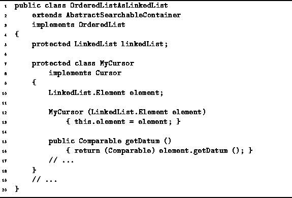

Data Structures and Algorithms
with Object-Oriented Design Patterns in Java
Data Structures and Algorithms
with Object-Oriented Design Patterns in Java
Program  gives the definition of a the
OrderedListAsLinkedList.MyCursor inner class.
The MyCursor class implements the Cursor
interface defined in Program .
The purpose of this class is to record the position of an item
in an ordered list implemented as a linked list.
gives the definition of a the
OrderedListAsLinkedList.MyCursor inner class.
The MyCursor class implements the Cursor
interface defined in Program .
The purpose of this class is to record the position of an item
in an ordered list implemented as a linked list.

Program: OrderedListAsLinkedList.MyCursor class.
The MyCursor class has one field, element, which refers to the linked-list element in which a given item appears. Notice that this version of MyCursor is fundamentally different from the array version. In the array version, the position was specified by an offset, i.e, by an ordinal number that shows the position of the item in the ordered sequence. In the linked-list version, the position is specified by a reference to the element of the linked list in which the item is stored. Regardless of the implementation, both kinds of position provide exactly the same functionality because they both implement the Cursor interface.
The getDatum method of the OrderedListAsLinkedList.MyCursor class
is also defined in Program .
This method simply dereferences the element field
to obtain the required item in the ordered list.
The running time is clearly O(1).
 Copyright © 1998 by Bruno R. Preiss, P.Eng. All rights reserved.
Copyright © 1998 by Bruno R. Preiss, P.Eng. All rights reserved.